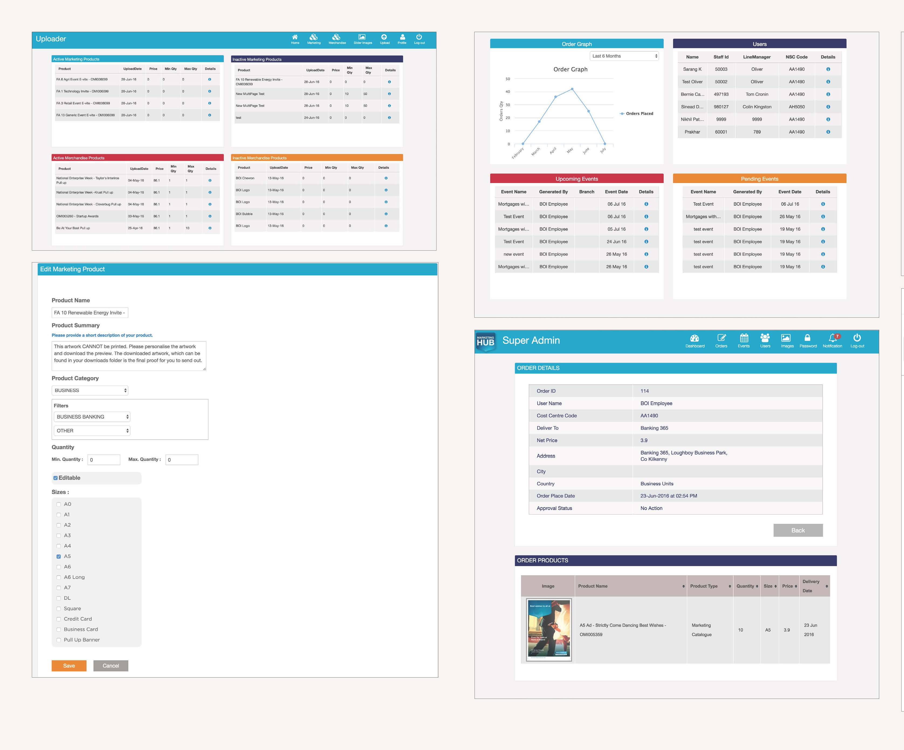
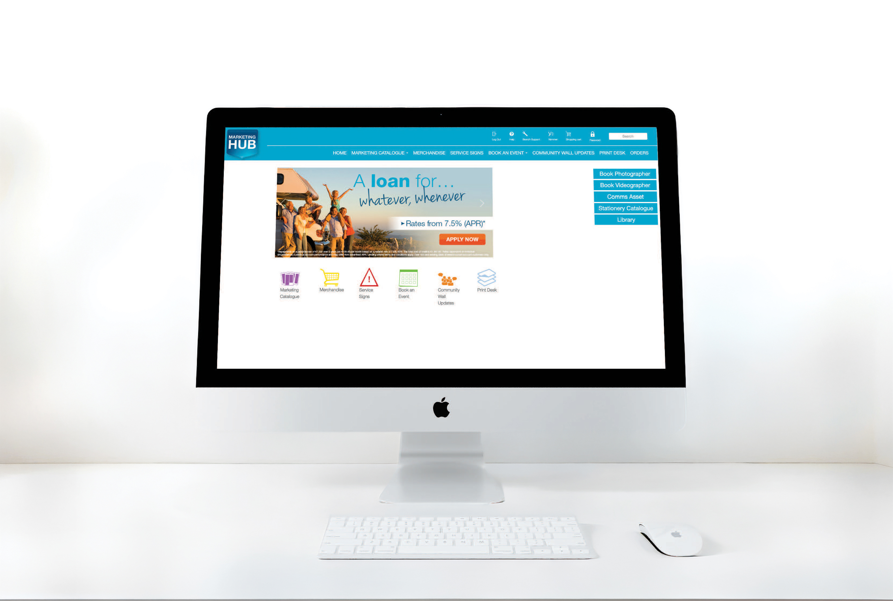
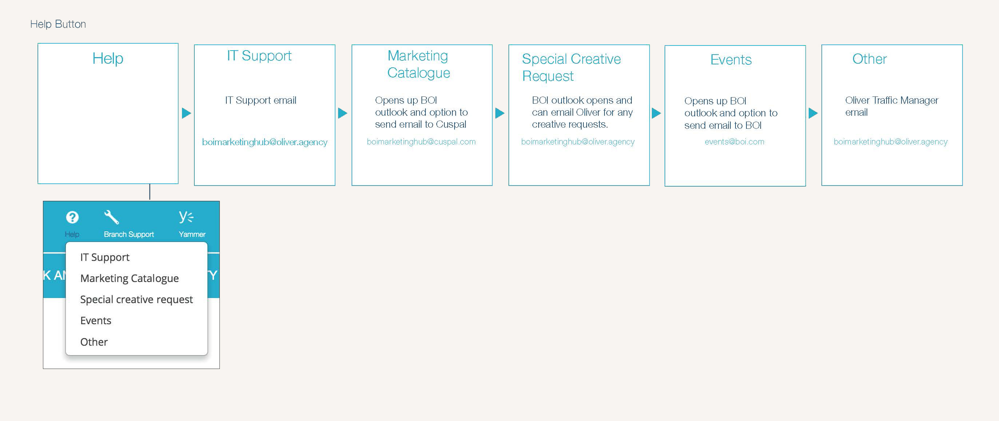

Case Study · E-Commerce UX · 2015–2017

Before the Marketing Hub existed, branch staff had no centralised system for ordering marketing materials, merchandise, or booking events. Everything was ad hoc. Staff didn't know what was available, who to contact, or how long anything would take.
The marketing team was drowning in repetitive emails and phone calls, spending hours every week fielding requests that should have been self-service. Errors were common, items were duplicated, and there was zero visibility on what had been ordered or when it would arrive.
My brief was to design and front-end develop a platform that would give branch staff full autonomy while giving the marketing team complete oversight. In practice, this meant building an internal e-commerce system from scratch.
End-to-end ownership across user research, information architecture, wireframing, visual design, HTML/CSS prototyping, and usability testing with real branch staff.
Bank of Ireland, via Oliver Agency. Platform serving 200+ branch staff across Ireland.
200+ branch staff had no centralised way to order marketing materials. Everything was ad hoc; calls, emails, guesswork. The marketing team spent 15+ hours a week just managing requests that should have been self-service.
I interviewed both branch staff and the marketing team to understand the breakdown from both sides. The key insight: staff didn't know what existed. The solution wasn't just better ordering. It was better discovery.
The platform launched to full adoption across all branches. Ordering time dropped by 60%, the marketing team reclaimed 15 hours a week, and for the first time, branch staff had complete visibility on their orders.
I conducted research with both sides of the problem: branch staff who needed to order materials, and the marketing team who had to fulfil those orders. The gap between their experiences was significant.
No visibility on order status. Once a branch placed a request, it disappeared into an email thread. Staff had no way of knowing if it had been received, approved, or when it would arrive.
Too much back and forth. Simple requests required multiple emails to clarify what was needed, what sizes were available, and who the right contact was. Both sides found it frustrating.
15+ hours of admin per week was being spent by the marketing team on repetitive tasks: answering the same questions, chasing approvals, manually processing orders that should have been automated.
Interviews with branch staff and marketing team. Mapped the existing ad hoc process to find every point of friction.
ResearchDefined the platform structure: catalogue, merchandise, events, print desk, admin. Built flowcharts for every user journey.
Balsamiq · IllustratorLow-fidelity wireframes for all key flows: ordering, customisation, checkout, event booking, and the 'super admin' dashboard.
BalsamiqDesigned the full visual system and built a working HTML/CSS prototype for usability testing with real branch staff.
Illustrator · HTML/CSSUsability tested with real branch staff before launch. Iterated on findings. Handed off to development for build.
Usability Testing

The challenge wasn't just building an ordering system. It was making 200 people feel confident enough to use it without picking up the phone.
Faster ordering time from request to fulfilment
Adoption across all 200+ branches at launch
Saved per week for the marketing team